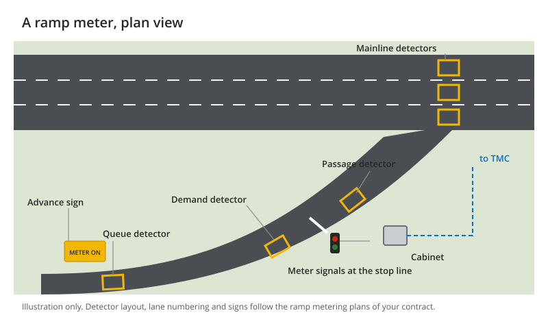

Ramp metering
In one sentence: a ramp meter is a small signal on an on-ramp that lets cars onto the freeway one or two at a time, timed from what the detectors see.

Main parts
| Part | What it does |
|---|---|
| Ramp meter controller and cabinet | Runs the metering rate. See Equipment cabinets |
| Meter signal heads | Red/green signals at the stop line |
| Detection | Demand, passage, queue and mainline detectors. See Vehicle detection |
| Signs | Advance warning signs, sometimes with flashers |
| Communication | Link to the TMC for monitoring and rate changes. See Network equipment: switches, routers, SFPs and cellular |
How it works
Detectors on the ramp and freeway tell the controller how much traffic there is. The controller sets the rate, and the TMC can monitor and change it remotely.
PM notes
- Detector layout and lane numbering must match the plans exactly; the TMC reads them by number.
- Plan the turn-on with Caltrans operations staff.
Common mistakes / what Caltrans actually checks
- Detectors wired to the wrong inputs.
- Turning on without communication to the TMC.